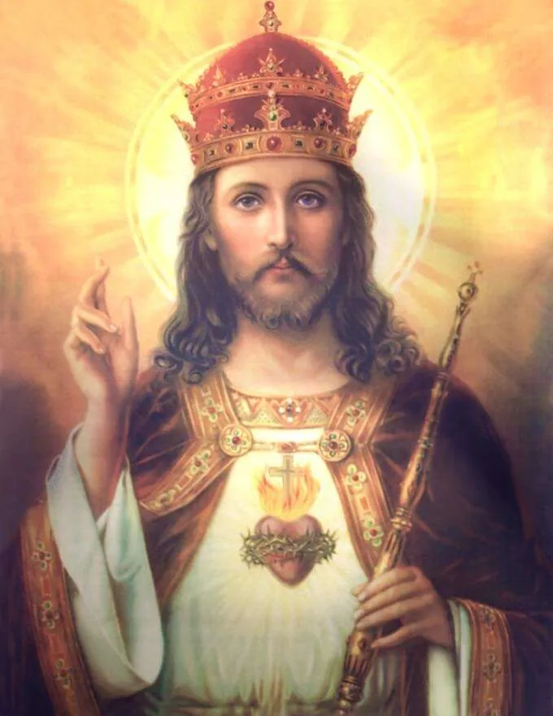

“By their fruits you shall know them.”
Matthew 7:16
Welcome to Our Brotherhood!
We are young Catholic men dedicated to establishing the social Kingship of Jesus Christ. We reject the modernist heresy, and are committed to living Christian charity for the greater glory of God and the salvation of souls.
We believe faith is a gift from God. A gift that if we don’t cultivate we shall lose, but also one we are called to share with ALL people.
For this purpose we seek to grow in virtue and set a good example to ourselves and the world, and embrace Catholic Action as the necessary remedy for our troubled times.
This is our call:
Who: We want single, traditional Catholic, sedevacantist men between the ages of 18 and 33.
What: To build a stronger community, engage in social activities, and practice Christian charity.
When: We will meet on a regular basis, with bi-weekly volunteering and monthly events and gatherings.
Where: At all geographic locations where there are traditional, sedevacantist, Mass centers.
Why: To preserve and promote our faith, to grow in virtuous friendship, and set an example of Christian life.
How: By serving the poor, the young, the old and the sick, and supporting the apostolic mission of the Church.
If you are interested in joining us, or starting a chapter, please contact us on our Contact Page!